New chances, a better 3D camera, and build-ups that play on
Everything since the last big notes, on one page. Part A is already in the game. Part B is waiting for your push. Tuning has its own page.
PART A · ALREADY LIVE
Pushed this morning, 14 Oct. Pull the game up and these are in.
A1 · NEW CHANCES FOLLOW THE MATCH
Settings → Chances: New. Each chance comes from what the match is doing right now: your wing, the part of the pitch the ball is in, and the kind of move the radar is playing. The same kind never comes twice in a row. Crosses and cutbacks are capped at 2 in every 8 chances.
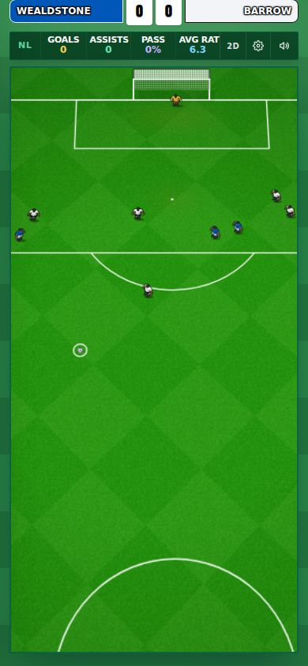
A New chance, on your side of the pitch.
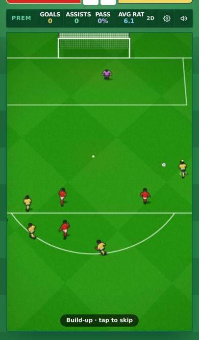
A build-up playing before the chance is yours.
A2 · 3D CAMERA AND CONTROLS
On corners the turn stops softly at 60°, so the goal stays on screen. A turned camera keeps the goal and drops the stand roof. Drag-back and zoom no longer swap after you flick between 2D and 3D. Drag up and down works again.
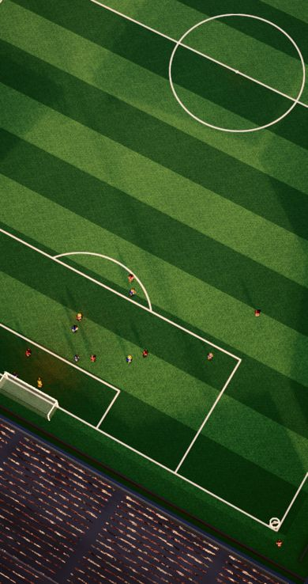
Corner, turned as far as it goes (60°).
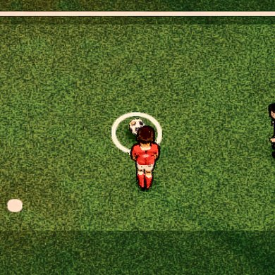
The new ball (at his feet): classic black and white, 1.6× bigger. In the air it rises with puffs instead of a height line.
A3 · NO MORE BLACK PLAYERS IN BRIGHT AND LIGHT
Switching to the Bright or Light pack turned every player black. Now they keep their kits.
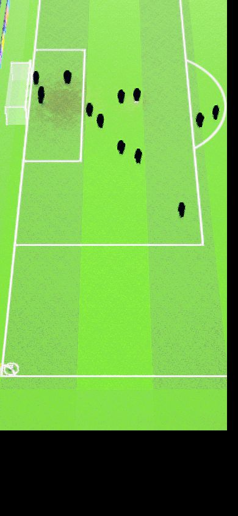
Before: Bright, every man black.
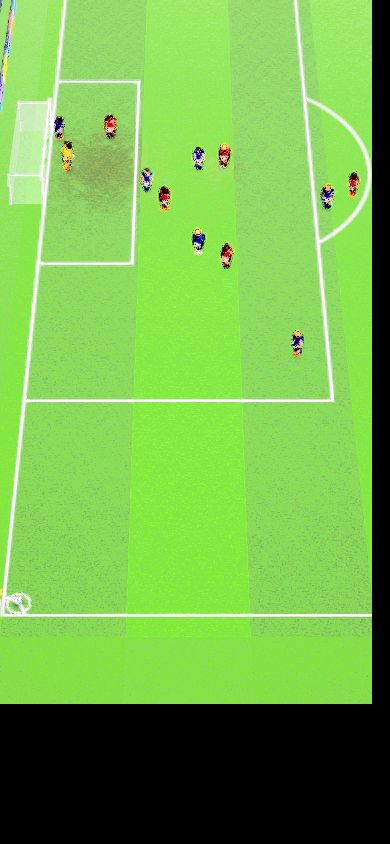
Now: real kits.
A4 · REAL SHOTS AND FULL MATCH TEST PAGES
Real shots: real goals from real matches, replayed on our pitch, and then the shot is yours. The keeper starts where he really stood. The camera follows the passes, then holds still once the ball is in the six-yard box. Full match: a whole 90 minutes to watch at up to 60×, stopping on your chances.
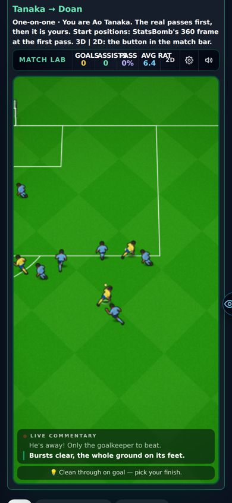
Real shots: a real pass on its way, before the chance is yours.
PART B · WAITING FOR YOUR PUSH
On the Harry branch. Checked, not live.
B1 · BUILD-UPS PLAY ON, NO CUT
Passing to a team-mate who shoots already played straight through. The cut only happened in build-ups: PASS, a wait, BACK TO YOU, then a new picture from nowhere. Now a build-up carries on. You pass, you run into the box, and he shoots or lays it back into your stride for another kick.
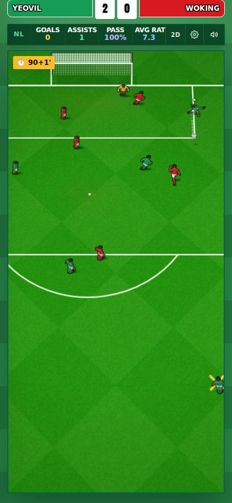
You pass it back.
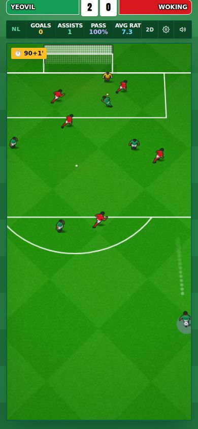
He takes it. No PASS banner, no cut.
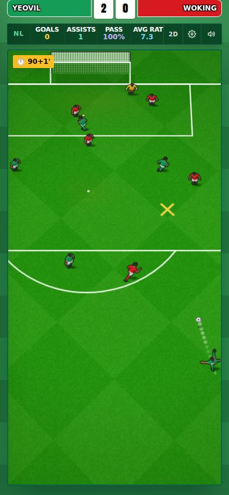
He shoots.
Chances: New only. With no goal, the next picture now flows on from where everyone was standing. Seen: a cutback. Not seen yet: a lay-off, and the flow into the next picture (both only measured).
B2 · MENUS OPEN ON THE TAP
No more fades, slides or stagger. Tap a menu and it's there. The big moments keep their reveal: awards night, the signing, the cup draw, deadline day, the vote.
B3 · TEXTURE PACKS: A DROPDOWN WITH PICTURES
Settings and the match's ⚙ show the current pack. Tap it to see a picture of each one and pick. A new pack shows up in the list by itself.
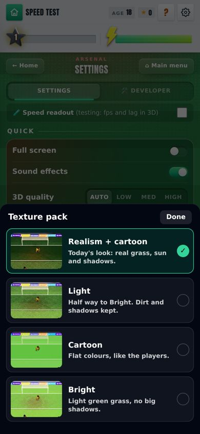
The ✓ marks the pack in use.
B4 · DRIBBLES ARE A REAL CHANCE, MORE OF THEM UP THE LEAGUES
On Chances: New, the top-down dribble run is back as one of the chances you get. Better leagues give you more of them.
B5 · REAL SHOTS: MEN MOVE LIKE THE BUILD-UPS
In the real shots (the replayed real-match goals), players used to chase the ball forever. Now they run the way they do in our build-ups, and the passes play out.
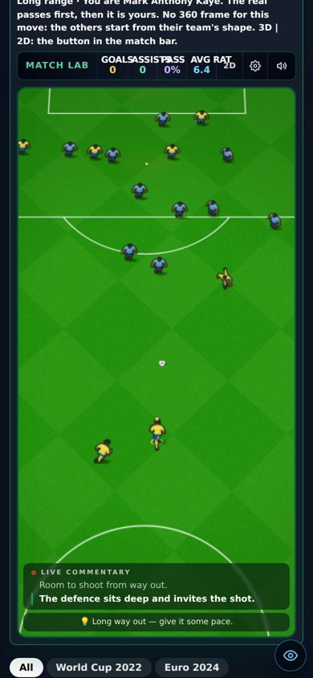
Mid build-up on a real shot: the defence sits, you have room.
B6 · TWO TEST PAGES
Full match: one view with a 2D | 3D | Radar switch, played live. It isn't fixed before kick-off any more: your chances feed back into the match, and the ball goes forward more. Dribble on the stick: steer the dribble run with your left thumb, flick to knock it past, tap a team-mate to pass. Neither is in the real game yet.
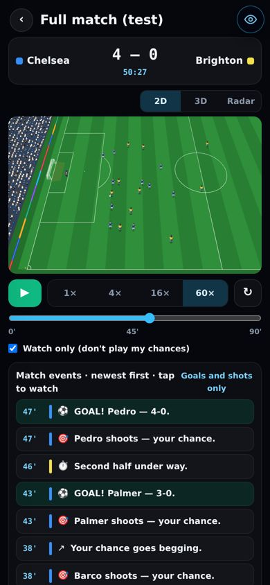
Full match, 2D.
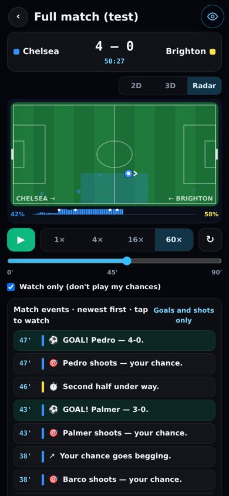
Same match, Radar.
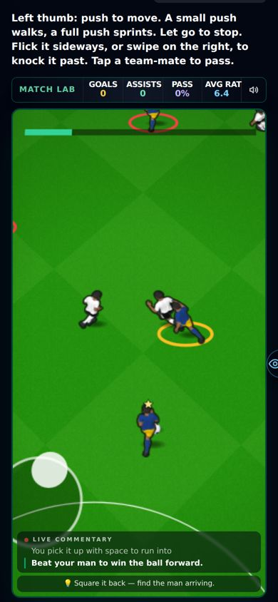
Dribble on the stick.
BEING BUILT NOW
12 texture packs building
8 new ones, including Soft (between Cartoon and Light), each with its picture in the dropdown.
Keep playing after you pass building
A switch: Auto run | Joystick. With Joystick you steer yourself after the pass. The team-mate shoots, passes back if you're open, or plays you through if you're running in behind. As captain you can call for it.
KNOWN ISSUES
Lay-offs mean slightly fewer team-mate goals to judge
On a long shot, about 1 pass in 10 now comes back to you, not to his shot. Your extra kick makes up for it, but that isn't counted yet.
Cameras on 2D and 3D, still broken on some chances open
Waiting on your 3D camera video.
YOUR CALLS
Push this live? yes / no
Part B, plus the tuning panel. Or wait for the two builds above and push them all together.
Keep lay-offs? yes / no
My answer: yes. It's the "back to you" you asked for, with no cut.
The numbers, if you want them
Live (Part A): crosses and cutbacks at most 2 in any 8 chances; corner turn ±60°, goal on screen in 4 of 4 turned views; turned camera keeps the goal in 213 of 216 views (was 171); roof on screen when turned 35% → 0%.
Pass flow: passes in build-up and midfield pictures that cut 100% → 0%. Gap to the next picture: 1.6 s pause + jump → about 2 s of play. 90% of lay-offs reach you. A team-mate's long-range goals per pass 32% → 28%.
Menus: Home → Stats 0.9 s → 0.05 s. Phone → League app 0.7 s → 0.16 s.
Dribble share: National League 3%, League Two 4.5%, League One 6%, Championship 8%, Premier League and Europe 10%.